Adapting a CNN Brain Tumor Classifier for Wider Use
Team Members: Julia Geller & Qi Li
Introduction
The goal of our project was to train a Neural Network to classify if an MRI brain image was healthy or contained either a glioma, meningioma, or pituitary tumor. We based our approach off on a publication that reported high accuracy for a model that classified brain images as one of the three aforementioned tumors (Abiwinanda et al., 2020). We wanted to extend the capabilities to also distinguish between tumor and healthy brain scans so the model could fulfill a wider array of physician needs. We tested three model architectures to identify a suitable model for this problem: the model from the paper (Original), a model we created (Adjusted), and a fine-tuned Resnet50 model (Resnet).
Paper Review
The paper "Brain Tumor Classification Using Convolutional Neural Network" focuses on developing an efficient CNN model for classifying three common types of brain tumors—Glioma, Meningioma, and Pituitary—using T1-weighted contrast-enhanced MRI images. The study simplifies the conventional method of tumor classification by eliminating the need for prior region-based segmentation and feature extraction, thereby streamlining the process. The proposed model, tested on 3,064 images, achieved a training accuracy of 98.51% and a validation accuracy of 84.19%, demonstrating that a simple CNN architecture could yield high accuracy and potentially improve clinical diagnostic processes.
Key takeaways include the model's ability to classify tumors with high accuracy using minimal computational resources and without the complexities of tumor segmentation, suggesting significant potential for real-world applications. The findings highlight the power of deep learning in medical image analysis and suggest further exploration into more sophisticated models that could improve accuracy and adaptability to different clinical settings.
About the Data
The data used in this project is a combination of two datasets, referred to as fig share and SARTAJ. Fig share is the data used in the original paper. This data includes T1-weighted MRI brain images for patients with one of three types of tumors: glioma, meningioma, and pituitary. SARTAJ is a Kaggle dataset with MRI brain images of patients with one of the aforementioned tumor types and healthy patients. In our project, we only use the brain images of healthy patients from this dataset. Both datasets had grayscale images. Fig share images were mainly sized 512x512 while SARTAJ images were 233x236, though there was variation in each dataset. Various sizes of the data were tested with different models to create the best performing models. The original and adjusted models both use 64x64 grayscale images while Resnet worked best on 256x254 color (RGB) images.
We test two splits of data: balanced and imbalance. The balanced split consists of 500 train, 100 validation, and 100 test images for each tumor and 219 train, 50 validation, and 50 test images for the healthy class. Smaller validation and test sets were used for the healthy class as this class consisted of fewer images and we wanted to retain as many images as possible for training. The imbalanced split was created to inflate the number of training samples for the glioma class as it was observed that this class was the class with the largest proportion of incorrect predictions. Imbalanced data had the above-stated splits for all classes, except the glioma class which had 836 train, 50 validation, and 50 test images. Both the original and adjusted models worked best with imbalanced data while Resnet worked best with balanced data, so those datasets were used for their respective models.
Models
We compared the performance and learning abilities of the Adjusted, Original, and Resnet models.
Adjusted Model
We adjusted the original paper’s architecture in hopes of improving the model for our task. This adjusted model adds depth by incorporating an additional convolutional layer and more filters at each stage, allowing it to capture more detailed features in the brain scan images. The progressive increase in filter depth (16, 32, 64) can help in capturing finer details as the image size reduces, aiming to improve the model's ability to differentiate subtle differences between tumor types and healthy brain tissue. Each maxpool has a kernel size of 2 and stride of 2. All convolutions each have a kernel size of 3. The linear layers had 128 and 4 neurons respectively.
Original Model
This model uses a straightforward architecture with two convolutional layers and max pooling followed by fully connected layers. It's a basic approach designed to capture fundamental patterns in the image data without overfitting, suitable for smaller datasets or less complex image features. Each convolution was 32 filters with a kernel size of 3. Each maxpool kernel size was 2. The linear layer consisted of 64 neurons.
Resnet Model
- Initial Convolution and Max Pooling:
- The network begins with a 7x7 convolutional layer with 64 filters, stride 2, followed by a 3x3 max pooling layer, also with stride 2. This stage prepares the input for the deeper residual blocks by reducing spatial dimensions and increasing feature depth.
- Residual Blocks:
- Stage 1:
- Contains three residual blocks. Each block has three layers: a 1x1 convolution reducing the channels to 64, a 3x3 convolution at 64 filters, and another 1x1 convolution that expands the channels back to 256. The input is added to the output via a skip connection.
- Stage 2:
- Similar to stage 1 but with four blocks and the channels increased to 128 in the 3x3 convolution, with the output expanded to 512.
- Stage 3:
- Consists of six blocks with 256 filters in the 3x3 convolution layer, expanding the output to 1024.
- Stage 4:
- Includes three blocks, boosting the 3x3 convolution filters to 512 with output expanded to 2048.
- Stage 1:
- Ending with Global Average Pooling and Fully Connected Layer:
- The network completes with a global average pooling layer that reduces each feature map to a single value, followed by a fully connected layer that outputs the final classification.
Adjusted Architecture
| Layer | Output Shape | Param # | Activation |
|---|---|---|---|
| Input | (-1, 1, 64, 64) | ||
| Conv2d | (-1, 16, 64, 64) | 160 | |
| MaxPool2d | (-1, 16, 32, 32) | ReLU | |
| Conv2d | (-1, 32, 32, 32) | 4,640 | |
| MaxPool2d | (-1, 32, 16, 16) | ReLU | |
| Conv2d | (-1, 64, 16, 16) | 18,496 | |
| MaxPool2d | (-1, 64, 8, 8) | ReLU | |
| Linear | (-1, 128) | 524,416 | ReLU |
| Linear | (-1, 4) | 516 | |
| Total Parameters: | 548,228 |
Original Architecture
| Layer | Output Shape | Param # | Activation |
|---|---|---|---|
| Input | (-1, 1, 64, 64) | ||
| Conv2d | (-1, 32, 62, 32) | 320 | ReLU |
| MaxPool2d | (-1, 32, 31, 31) | ||
| Conv2d | (-1, 32, 29, 29) | 9,248 | ReLU |
| MaxPool2d | (-1, 32, 14, 14) | ||
| Linear | (-1, 64) | 401,472 | ReLU |
| Linear | (-1, 4) | 260 | |
| Softmax | |||
| Total Parameters: | 411,300 |
Resnet Architecture
| Layer | Output Shape | Param # | Activation |
|---|---|---|---|
| Input | (-1, 1, 256, 254) | ||
| Conv2d | (-1, 64, 128, 127) | 9,408 | |
| BatchNorm2d | (-1, 64, 128, 127) | 128 | ReLU |
| MaxPool2d | (-1, 64, 64, 64) | ||
| Conv2d | (-1, 64, 64, 64) | 4,096 | |
| BatchNorm2d | (-1, 64, 64, 64) | 128 | ReLU |
| ... | ... | ... | ... |
| Bottleneck | (-1, 2048, 8, 8) | 0 | |
| AdaptiveAvgPool2d | (-1, 2048, 1, 1) | 0 | |
| Linear | (-1, 4) | 8,196 | Softmax |
| Total Parameters: | 23,516,228 |
Training
All models were trained using Cross Entropy Loss and the Adam optimizer. The adjusted models were trained for 20 epochs with a learning rate of 0.001 while the original paper models were trained for 10 epochs with a learning rate of 0.001 as was specified in the original paper. Resnet was trained for 2 epochs with a learning rate of 0.0001.
Results
Adjusted Model
Test Loss: 0.596, Test Accuracy: 82%
Figure 1: Confusion Matrix for Adjusted Model
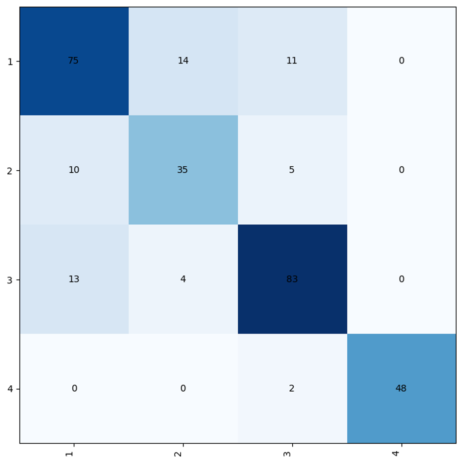Figure 2: Training and Validation Loss and Accuracy plots for Adjusted model
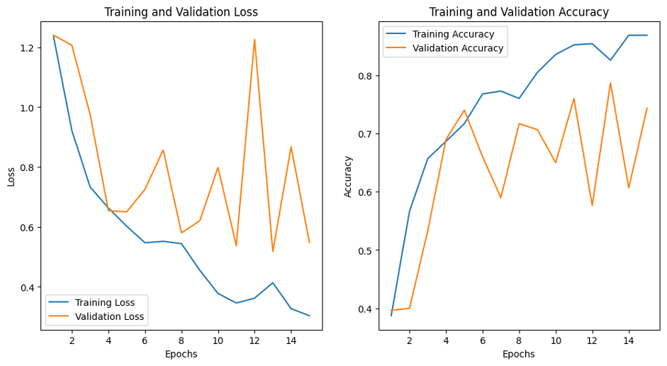Figure 3: Outputs of convolution 1 of Adjusted model
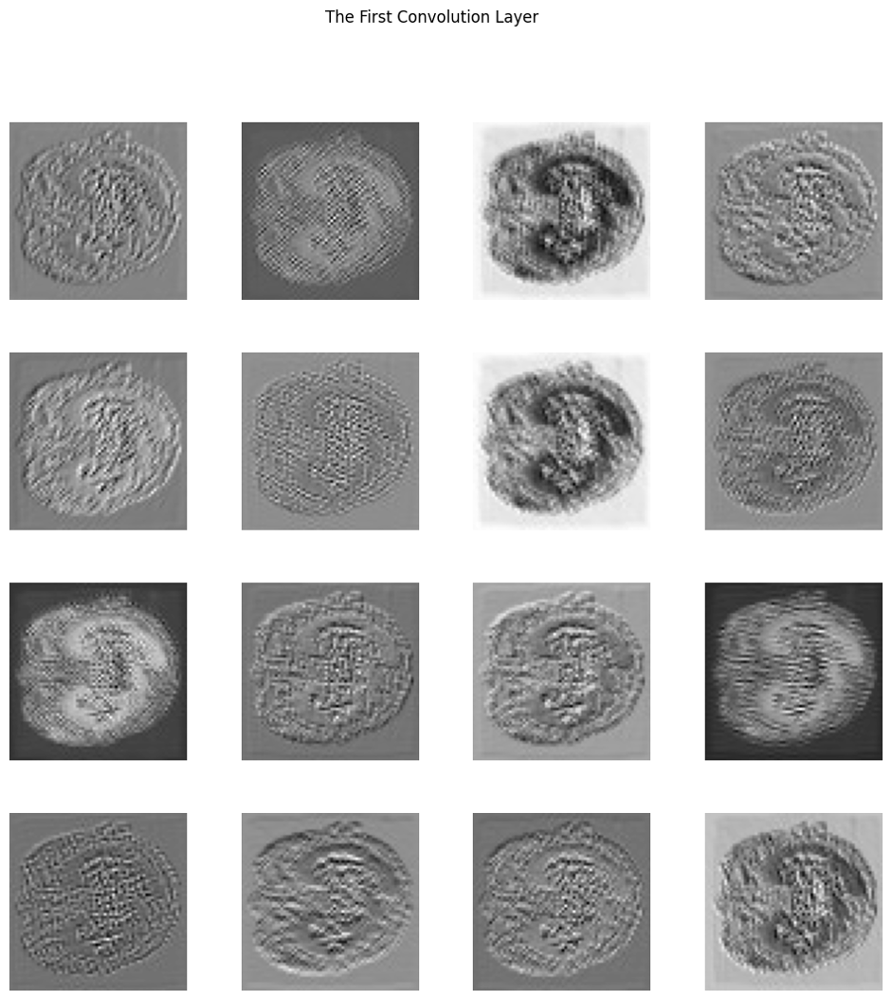Figure 3.1: Outputs of convolution 2 of Adjusted model
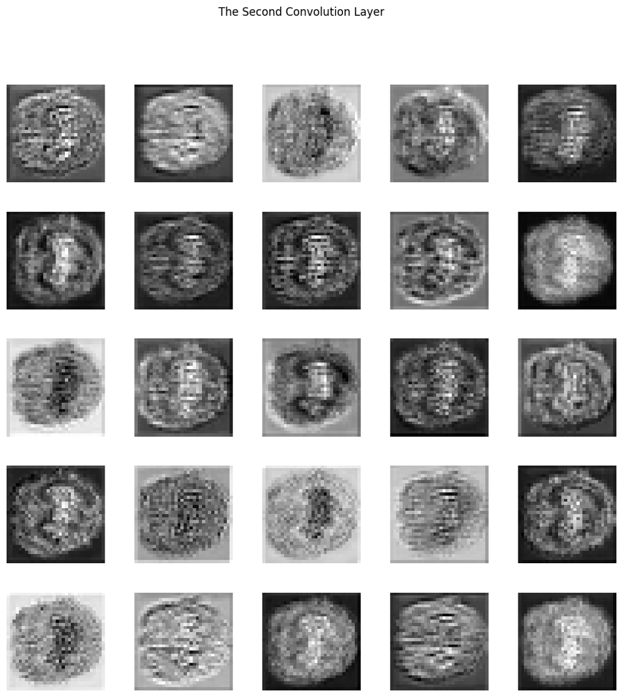Figure 3.2: Outputs of convolution 3 of Adjusted model
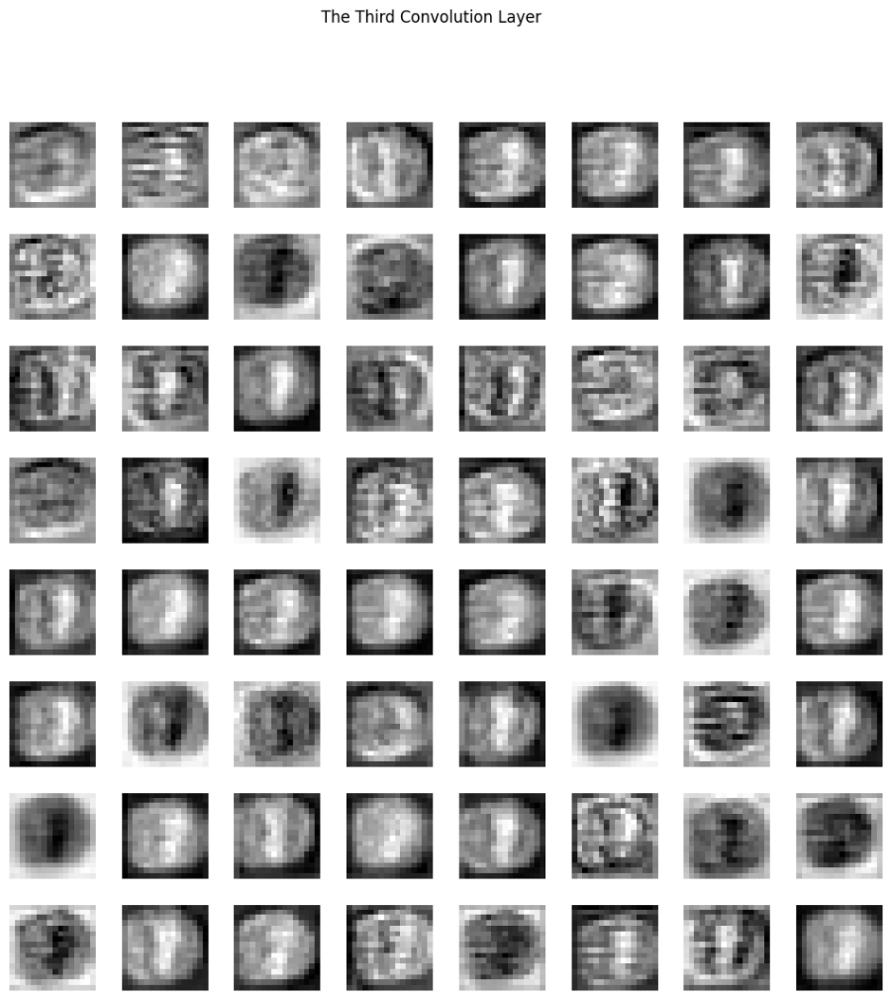Figure 4: Parameters Gradients of Adjusted model

Figure 5: Activations of Adjusted model
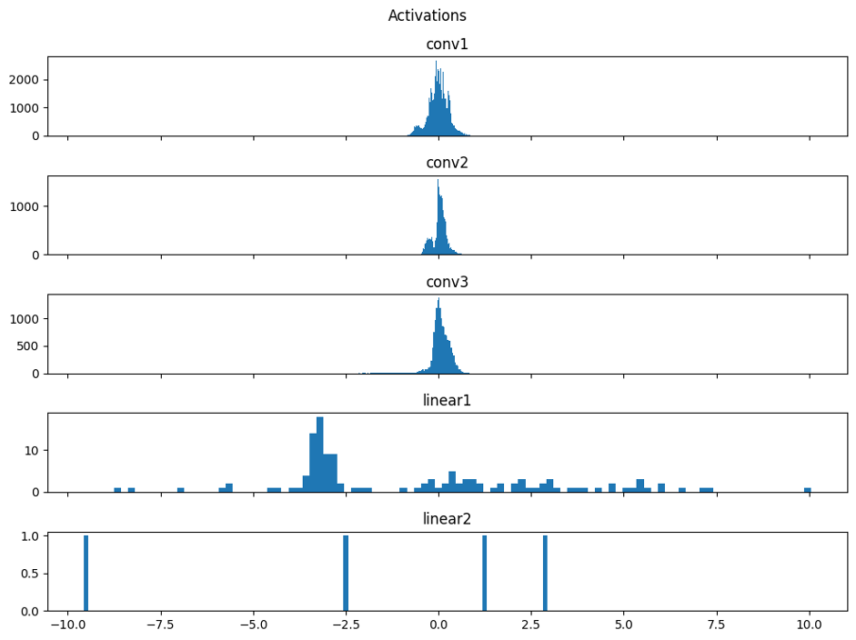Figure 6: Activations Parameters of Adjusted model
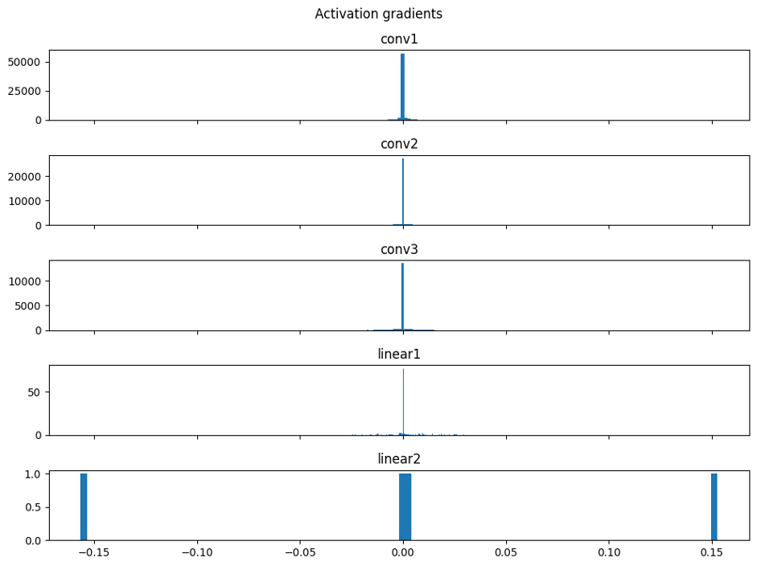Original Model
Test Loss: 1.048, Test Accuracy: 68.86%
Figure 1.1: Confusion Matrix for Original model
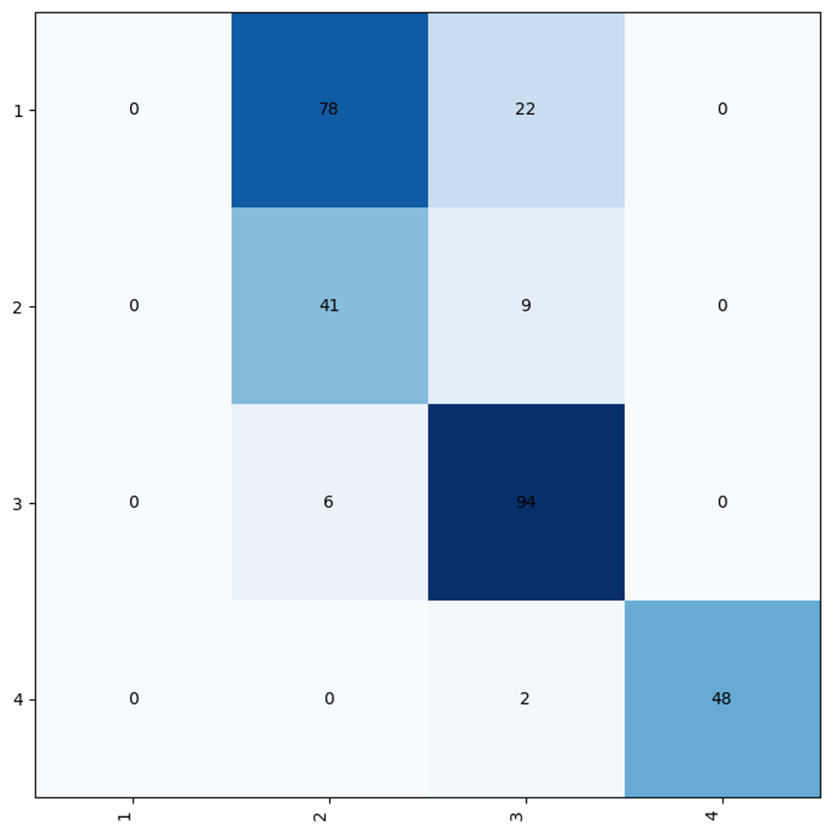Figure 2.1: Training and Validation Loss and Accuracy plots for Original Model trained on tumor and healthy data
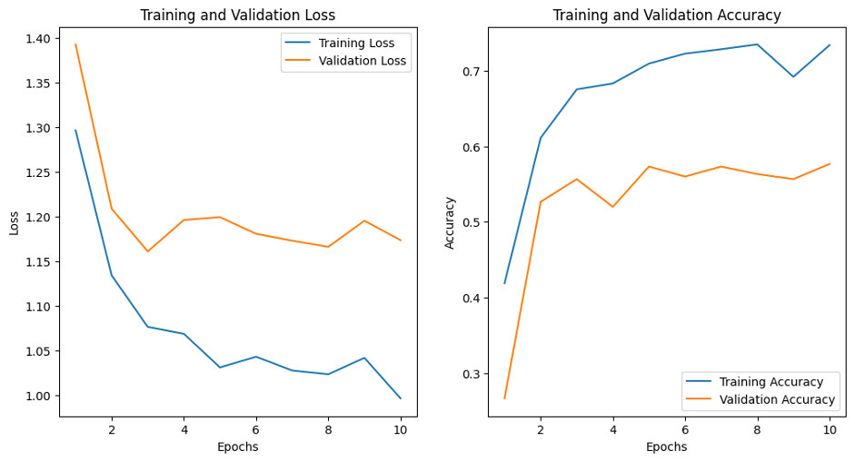Figure 3.3: Outputs of convolution 1 of Original model
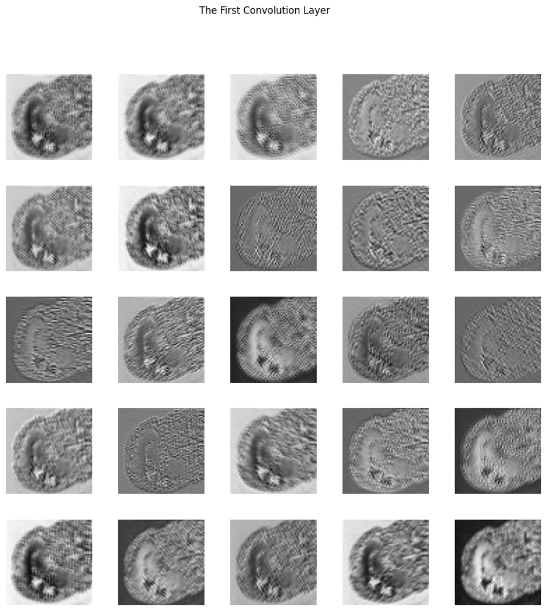Figure 3.4: Outputs of convolution 2 of Original model
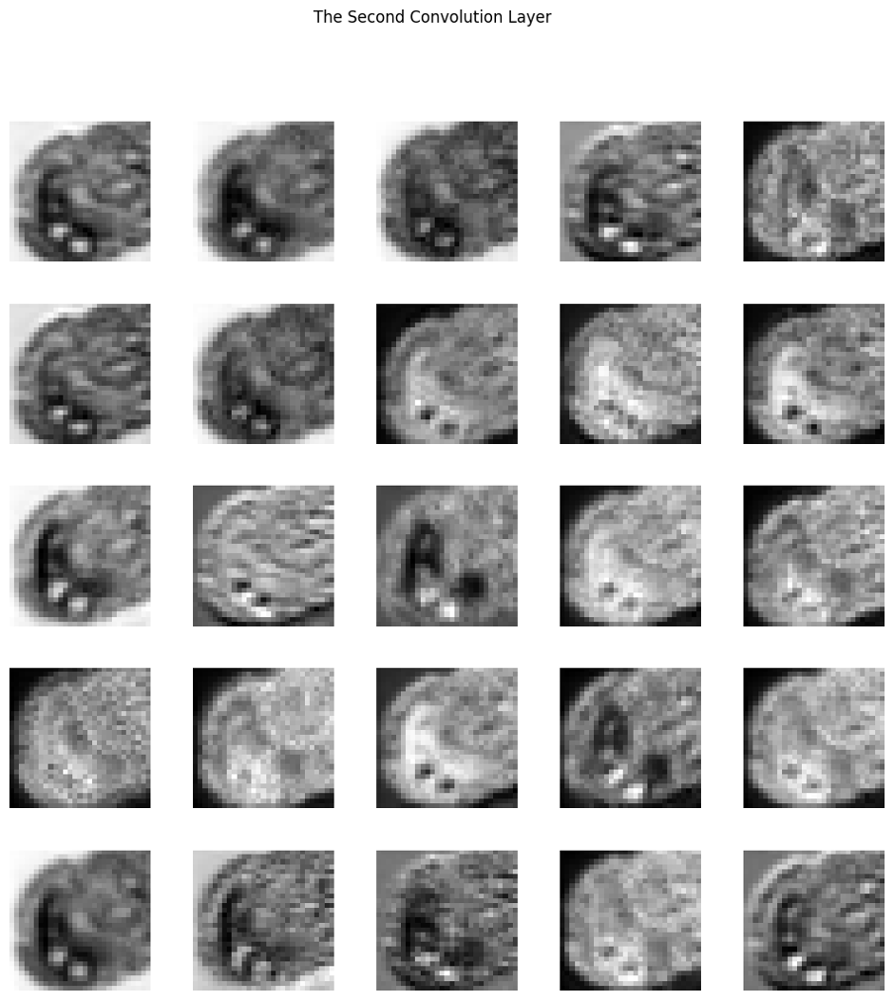Figure 4.1: Parameters Gradients of Original model
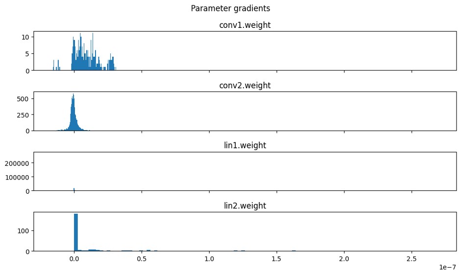Figure 5.1: Activations of Original model
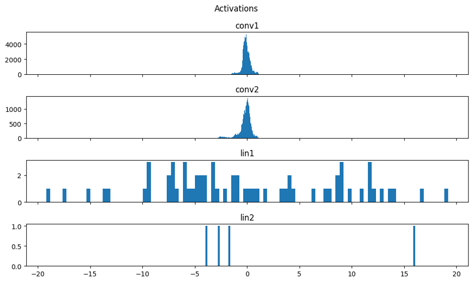Figure 6.1: Activations Parameters of Original model
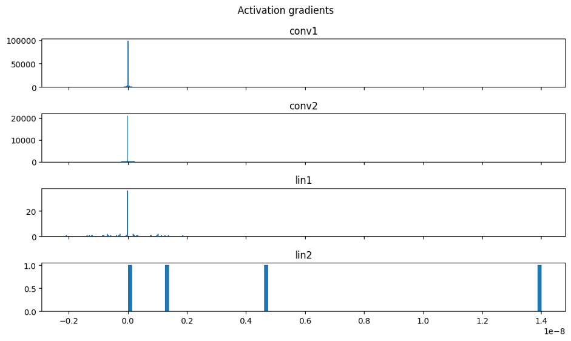Conclusions
The best model was Resnet with about 94% accuracy on test data. In the medical domain, a type 1 error is when a model incorrectly predicts the presence of disease and a type 2 error is when the model fails to predict an instance of a disease. Type 2 errors must be avoided and it is also highly sought after for type 1 errors to be minimized. The Resnet model had 0 type 1 and 2 errors which is very encouraging. The majority of mistakes were made on class 1 which suggests that training with a higher balance of class 1 samples may improve model performance. While it was not feasible to include all outputs from each convolution as there were too many, interesting convolution outputs were included. Convolutions 1 and 10 appear to pick up on textures and highlight the parietal lobe of the brain. Convolution 2 created more black and white scans of the brain. Convolution 15 was a large layer with low level features of the brain. The last layers including convolutions 39, 49, and 53 tended to have very high level features.
The next best model was the adjusted model with about 82% accuracy. This model also made most of its mistakes on class 1. The adjusted model also had no type 2 errors and just 6% type 1 errors which is likely acceptable. The validation accuracy was significantly lower than the training accuracy which may suggest the model overfitting to training data, despite different numbers of epochs and learning rates not improving test accuracy. Of the convolutions, the first appeared to pick up on textures, the second grasped lower-level features, and the third highlighted higher-level features. There were issues presented by the gradients that may signify its inability to learn well. The parameter gradients for the first linear layer and activation gradients for all convolutions were centered around 0 which may lead to vanishing gradients and hinder learning ability during training. Despite dropouts being added and not helping model performance, other techniques like batchnorm layers could be tested to improve the model’s learning and overall performance.
The worst-performing model was the original model from the paper with a test accuracy of about 69%. This model had a lower type 1 error rate than the adjusted model of 2% and made no type 2 errors. Much like the first and third convolutions in the adjusted model, the original model's first convolution picked up on textures and the second convolution picked up on higher-level features. As seen in the adjusted model, the parameter gradients for linear layer 1 and activation gradients for all convolutions were centered around 0 which may lead to vanishing gradients during training.
Interestingly, none of the models made type 2 errors, signifying they could easily distinguish between healthy and tumor images. The models with more convolutions seemed to be the best, suggesting more convolutions are especially important in this context. It was surprising that Resnet did not achieve higher accuracy given the depth of that model. Since Resnet was the best performing model, in the future we would work to improve the models by upsampling the class 1 data points in the training set or experimenting with different depth Resnets.
References
[1] Nyoman Abiwinanda et. al. Brain Tumor Classification Using Convolutional Neural Network. World Congress on Medical Physics and Biomedical Engineering 2018.